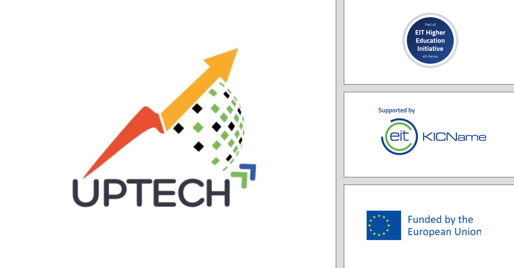

Foundations of Innovation: AI & Problem Solving
Welcome to the inaugural module. Here, we explore the seismic shift from intuition-based coaching to data-driven decision-making and introduce the GUT Matrix for prioritizing problems.

The Innovation Gap & Technology Stack
The sports industry is undergoing a digital revolution. Decisions are moving from "naked eye" observations to objective data. The market for AI in sports is projected to reach $29.7 billion by 2032 (Jain, 2025).
Understanding the Tech Stack Layers:
- The Data Layer (Sensing): The raw inputs. This includes GPS vests, cameras, and wearables that collect the data. If this layer is noisy, everything else fails.
- The Intelligence Layer (Insight): Where AI processes raw data to find patterns (e.g., "Player is fatigued").
- The Application Layer (Action): The dashboard or app where the coach sees the insight and makes a decision.
Key Technologies:
- Computer Vision: The ability to track skeletal movement and biomechanics using standard cameras, without requiring athletes to wear sensors.
- Wearables: Devices that measure physiological load, such as Heart Rate Variability (HRV).
The GUT Matrix Framework
Before solving a problem, you must prioritize it. The GUT Matrix helps you score problems on a scale of 1-5 to find the most critical issue.
(G) Gravity: How severe is the impact? (5 = Extremely Serious)
(U) Urgency: How soon must we act? (5 = Immediate)
(T) Trend: Is it getting worse? (5 = Rapidly Worsening)
Example Calculation:
A problem with Gravity 4, Urgency 3, and Trend 5.
Calculation: 4 x 3 x 5 = 60.
Assessment 1: Foundations
Select the correct answers. You can retry until you get them right. You must get at least 4 out of 5 correct to proceed.
Mastering Vibe Coding
In this module, you will learn the philosophy and practical steps of Vibe Coding—a method allowing you to instruct AI to write functional software using natural language.
2.1 The Paradigm Shift
What is Vibe Coding? It is a modern approach to application development that involves heavily relying on a Large Language Model (LLM) to generate code. Instead of writing every line of code by hand (execution), you describe the required outcome using natural language prompts (intent).
The term was popularized by OpenAI co-founder Andrej Karpathy in February 2025. It represents a shift from "Execution" to "Intent".
Traditional Coder
- Focuses on syntax, memory management, and debugging.
- Executes technical requirements precisely.
- Spends time on manual recoding for small changes.
High-Level Director (You)
- This is the new primary role of the human creator.
- Focuses on strategy, creative direction, and user experience.
- Sets the "Vibe" (emotional direction and strategic intent).
- Evaluates and refines AI output rather than writing it.
The Vibe Coding Workflow
2.3 Core Tools for Vibe Coding
Different phases of development require different "intelligent co-pilots". Choosing the right tool is critical.
| Tool Name | Primary Use Case |
|---|---|
| Lovable | Emotion-aware design. Best for non-technical founders needing beautiful UI/UX from a "vibe" prompt. Perfect for setting a "serene and supportive" tone. |
| Replit | Rapid prototyping. Excellent for "instant app scaffolding" and collaborative web-based coding. |
| Bolt.new | Full-Stack MVP. Generates backend, frontend, and database configurations instantly to test ideas. |
| Cursor | Refactoring & Context. Functions like an IDE with a brain; understands your entire project context to fix complex bugs. |
2.4 Prompt Engineering Techniques
To be a successful Director, you must master the prompt. Key techniques include:
- Be Clear and Specific (Intent): Don't say "Write code." Say "Write a Python script that calculates readiness based on sleep (60%) and soreness (40%)."
- Define Data Structures: Explicitly state inputs (e.g., JSON object) and outputs (e.g., integer 1-100).
- Specifying Frameworks: Tell the AI explicitly what language or framework to use (e.g., "Use React" or "Use Python") to ensure compatibility with your stack.
- Few-Shot Learning: Provide an example of a correct input/output pair to guide the AI's logic.
Assessment 2: Vibe Coding
Select the correct answers. You can retry until you get them right. You must get at least 4 out of 5 correct to proceed.
Vibe Coding in Sports Tech (Prototyping)
This module focuses on practical application: diagnosing root causes, defining SMART goals, and quantifying the subjective "vibe" of an athlete using biometrics.
3.1 Diagnosis & The 5 Whys
Before writing a single line of code, you must diagnose the problem. The "5 Whys" technique involves asking "Why?" repeatedly until the root cause is found.
Example: "Coach burnout" isn't just about logging data—it's often about a systemic lack of integration between two different platforms. Vibe Coding can accelerate this diagnosis by acting as a process analyst.
3.2 SMART Objectives & MVPs
Your solution needs a clear goal. We use the SMART framework. A critical component is the Time-bound nature (e.g., "By Friday at 5 PM").
The Power of the MVP (Minimum Viable Product): Vibe Coding is ideal for MVPs because it drastically accelerates development time for functional prototypes. You can launch an initial solution in hours rather than weeks.
Critical Limitation:
Vibe coding should be avoided for complex problems or those handling sensitive data (like biometrics) without strict human oversight, as LLMs can hallucinate or mishandle privacy.
3.3 Quantifying the Athlete Vibe
A central application of AI in sports is quantifying intangible factors like "The Zone" or "Stress".
Input -> Hidden State
Heart Rate Variability (HRV)
Deep Neural Networks (LSTMs) can predict mental states (stress, anxiety) with up to 83% accuracy using only HRV data (Coutts et al., 2020).
Motion Data (IMU)
12-dimensional Inertial Measuring Unit (IMU) time series data can predict if a tennis player is "In the Zone" with ~85% accuracy (Havlucu et al., 2022).
Hybrid Models
Combining bio-data with unstructured self-reports (Sentiment Analysis) achieves 94% accuracy (Duan et al., 2024).
Assessment 3: Prototyping
Select the correct answers. You can retry until you get them right. You must get at least 4 out of 5 correct to proceed.
Testing, Refinement & Future Outlook
The final module covers the crucial steps of Quality Assurance, Ethical considerations (HIPAA), and the future "Centaur" relationship between Human and AI.
4.1 Quality Assurance & Risks
The speed of Vibe Coding comes with responsibility. AI-generated code introduces specific risks:
- Loss of Understanding: If you rely too heavily on AI, you may not understand the codebase, making debugging difficult.
- Vulnerability Exposure: The incredible speed of development can allow more vulnerabilities to reach production due to rushed review.
- Implementation Cycle: When moving to production (Step 9), we follow the core innovation cycle: Build, Measure, Learn.
4.2 Data Privacy & Ethics
Sports tech deals with sensitive data. You must navigate:
- GDPR: In Europe, the General Data Protection Regulation (GDPR) provides strict protection for personal data, including athlete health metrics. (In the US, HIPAA applies).
- Algorithmic Bias & Fear of Failure (FoF): AI coaches might favor confident users. To mitigate this risk, systems must provide adequate Emotional and Motivational Support, not just technical correction.
4.4 The "Centaur" Model & Future
The future is not AI replacing coaches, but a partnership. The AI provides data (Knowledge Transfer), and the Human provides emotional intelligence.
The Tactical Validation Loop: When an AI suggests a tactical change (e.g., a formation shift), the human coach must not blindly accept or ignore it. They must perform a Tactical Validation Loop to evaluate, adapt, and personalize the suggestion before implementation.
The Tactical Validation Loop
Assessment 4: Final Certification
Select the correct answers. You can retry until you get them right. Pass with 4/5 correct to complete the course.
Course Complete!
You have mastered the Foundations of Sports Tech Innovation.